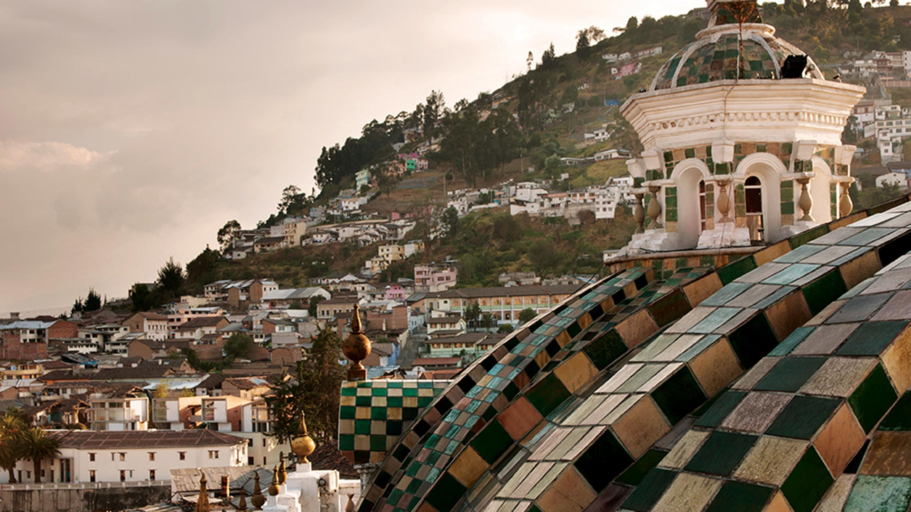

En Freepass EC, creemos que la moda es más que una tendencia, es una forma de expresión que celebra la individualidad y la exclusividad. Nuestra marca se inspira en técnicas ancestrales, respetando los saberes y tradiciones de nuestros artesanos, y fusionándolos con la creatividad y la innovación contemporánea.
Cada detalle artesanal es cuidadosamente seleccionado y elaborado para plasmar la autenticidad y la creatividad que nos caracteriza.
Nuestra marca busca experimentar e innovar constantemente, para llegar a un usuario actual que merece ser percibido con un valor de exclusividad y esencia que lo haga único. Cada pieza de Freepass EC es una obra de arte que combina la tradición y la modernidad, creando una experiencia única para nuestros usuarios.
Fuente del barrio San Marcos.
Reseña
En Free Pass vive una historia,
tejida a mano, con calma y memoria
Prendas que abrazan la piel y el alma,
con arte y amor, con fuerza y con calma.
Sostenible es su huella, ligera en el suelo
honrando la tierra, el agua y el cielo.
No es solo moda: es vida consciente,
una elección bella, un acto valiente.
Luce con orgullo su esencia sincera,
porque vestir así....... también es manera
de cuidar al mundo, paso a paso,
con cada puntada, con cada abrazo.
Fotografía cotidiana.
Diseñadora
Soy Ruth Quiguango, diseñadora de indumentaria con una pasión
arraigada por la moda y la creatividad.
Mi formación en Buenos Aires, donde viví durante 10 años,
me permitió ampliar mi visión de la moda y desarrollar una perspectiva única.
Mis raíces y la riqueza cultural de mi entorno han sido fundamentales
en mi proceso creativo. Me inspiran las técnicas textiles y
saberes tradicionales, que fusiono con innovación y diseño contemporáneo.
No busco replicar, sino reinterpretar y mejorar los procesos
artesanales para crear piezas auténticas y originales.
Como diseñadora comercial con 14 años de experiencia en el
sector textil, decidí independizarme para crear FREEPASS, una marca
que refleja mi esencia y me permite expresarme de manera auténtica.
Mi proceso creativo es una terapia, donde me nutro de mi entorno
y vuelco mis ideas y emociones en cada diseño.
Gerente Free Pass.
Diseñadora de modas.
"Cada pieza que creo es un
reflejo de mi pasión por la moda
y mi compromiso con la calidad
y la originalidad.
Desde el boceto hasta la
producción final, pongo mi
sello personal en cada detalle,
asegurándome de que cada
prenda sea una obra de arte única."
Origen

En Freepass, nos sumergimos en una búsqueda constante
de innovación y perfección en el diseño textil.
Con raíces firmes en nuestra herencia, nos esforzamos por crear
piezas únicas y de alta calidad que revaloricen la industria textil
y respeten sus saberes tradicionales.
No seguimos tendencias, las creamos.
Cada tela y cada pieza de moldería se diseñan con un propósito:
que cada prenda sea una obra de arte que refleje la esencia de quien la lleva.
Creemos en el trabajo colectivo y en la colaboración con marcas
independientes que compartan nuestra visión
Nuestro objetivo es crear prendas que trasciendan el tiempo y
puedan ser heredadas de generación en generación,
siempre respetando el medio ambiente y la versatilidad de cada pieza.
En Freepass, te ofrecemos un pase libre para descubrir y
expresar tu identidad, sin perder tu esencia.
Nuestra misión es que te sientas único y auténtico en cada
prenda que lleves.